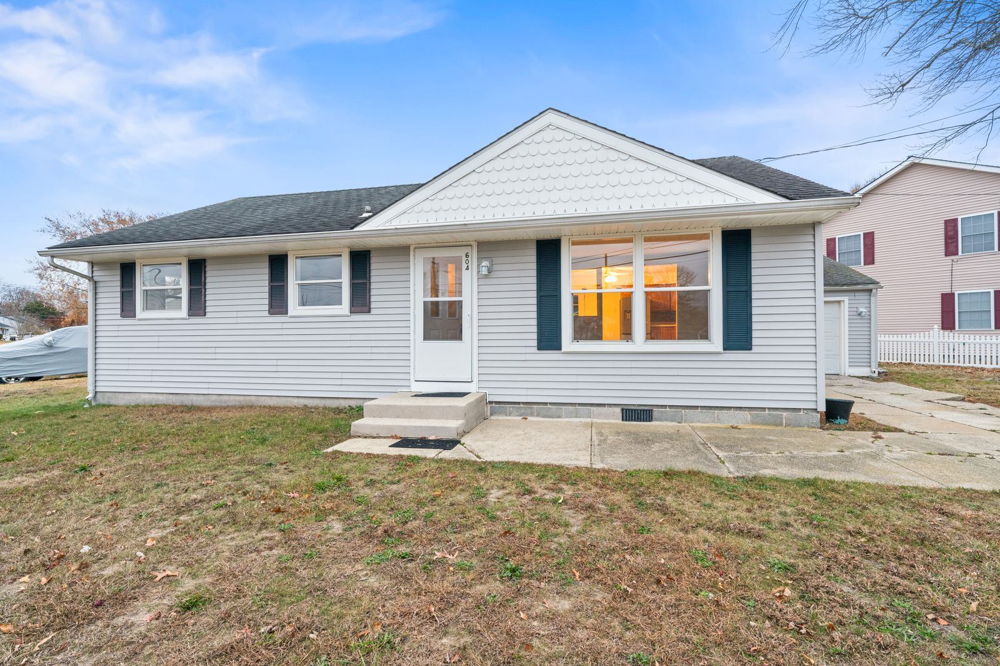
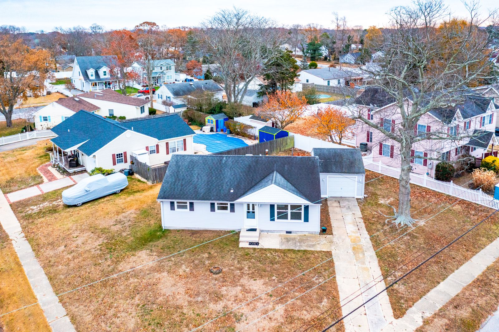
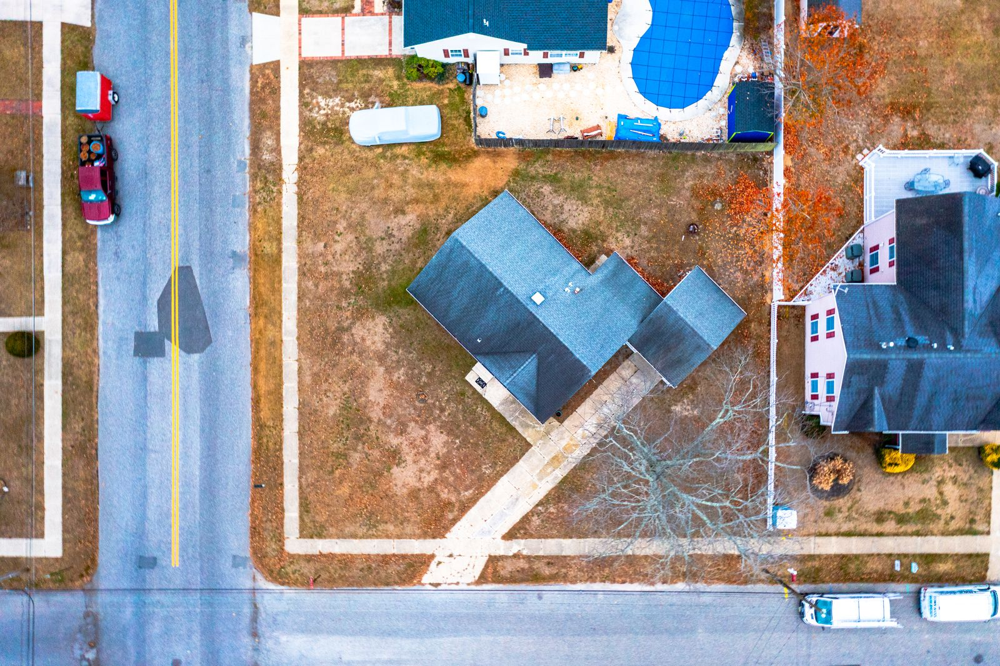
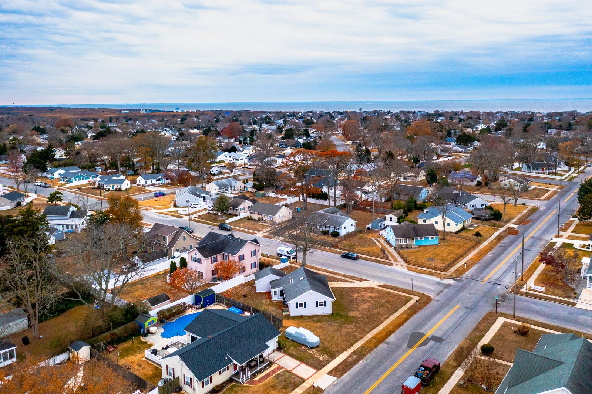
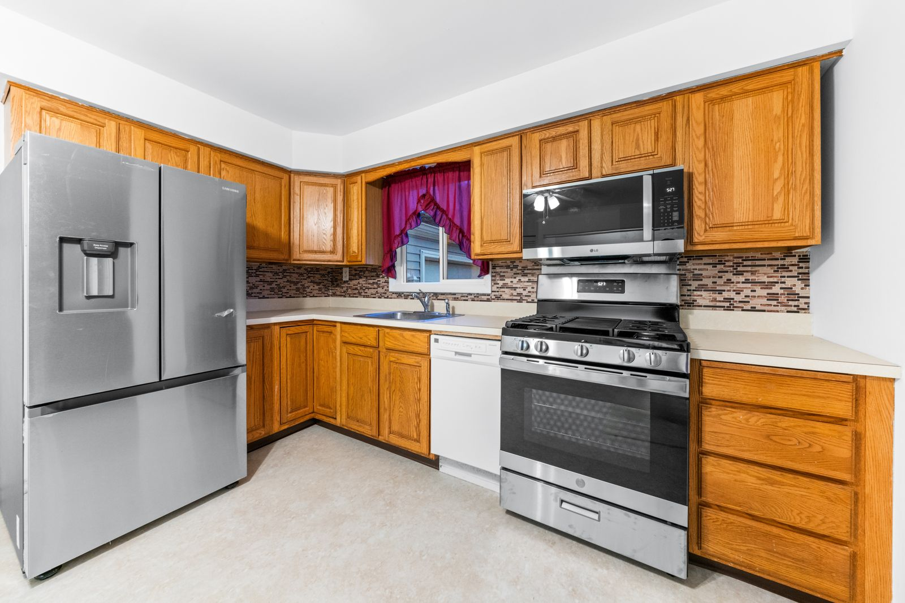
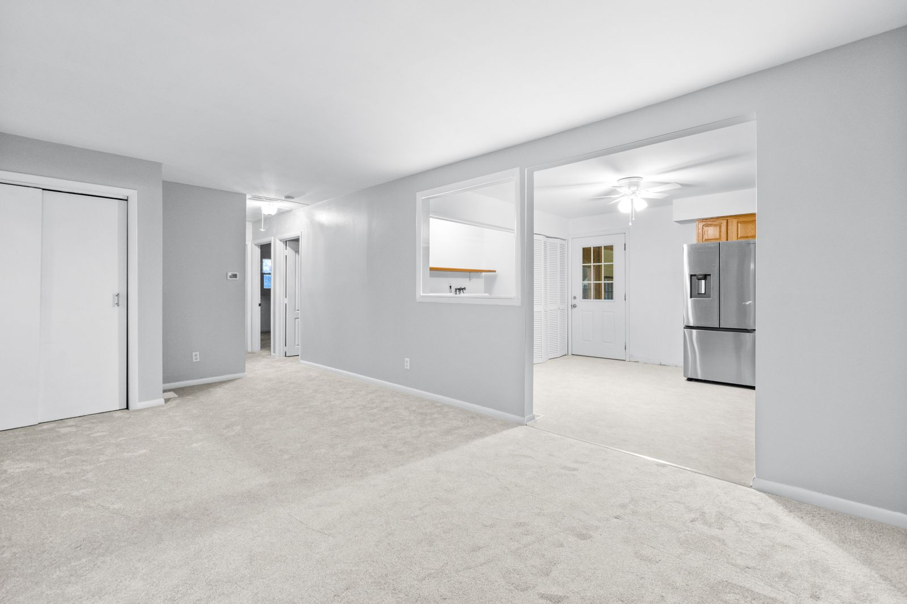
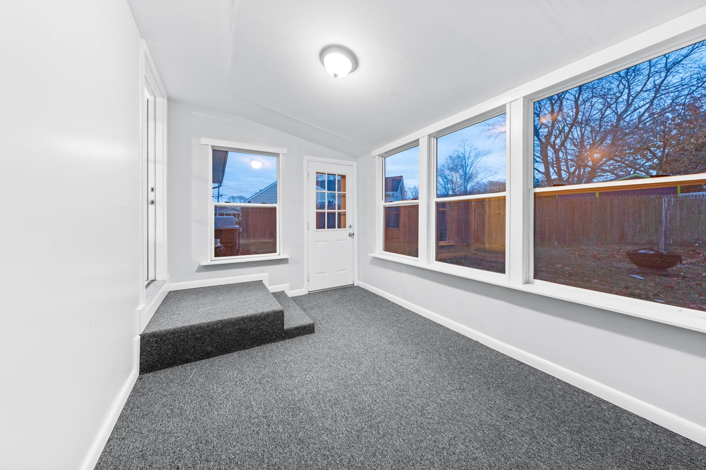
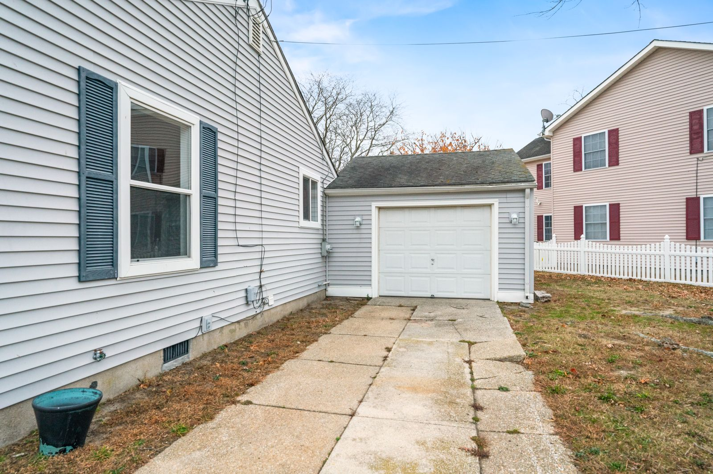
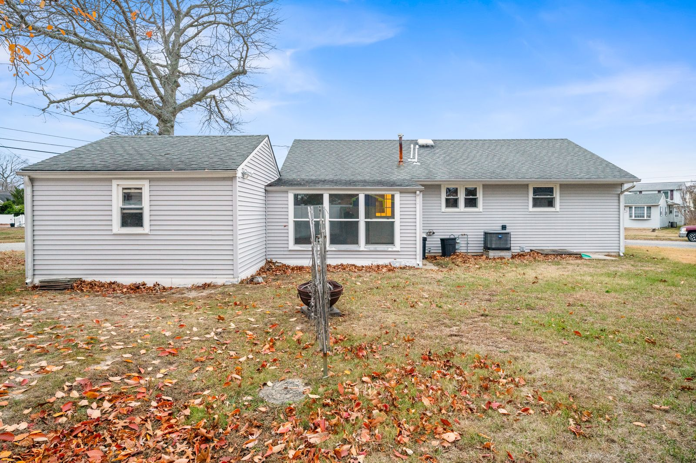
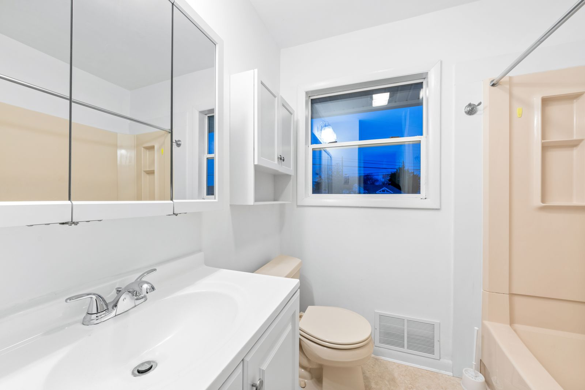

Real Estate Photography in North Cape May, NJ: 604 Scott Ave
About this North Cape May listing shoot
Listing Pixl provided professional real estate photography for this North Cape May, New Jersey property at 604 Scott Ave 08204. A North Cape May ranch on a corner lot with a sunroom and detached garage. The shoot was booked by Andri to give the listing scroll-stopping photos for the MLS, Zillow, and social media.
604 Scott Ave is a gray ranch on a corner lot in North Cape May with a detached garage and an enclosed sunroom. The shoot covered the kitchen with its new stainless appliances, the freshly painted living room, the sunroom and the bathroom, and used the drone to show the corner lot and the short trip to the bay.




















What we photographed
- Front exterior with dark shutters
- Drone aerials of the corner lot and garage
- Wide aerial toward the bay
- Kitchen, living room and sunroom
- Backyard and bathroom
Real estate photography services delivered
This North Cape May NJ shoot included HDR listing photography with professional editing and color correction, delivered next-day and sized ready for the MLS. Drone aerial photography showed the lot, the setting, and the surrounding North Cape May neighborhood — the views that make South Jersey listings stand out online.
Real estate photography in North Cape May, NJ
North Cape May sits in Lower Township between Cape May and the Delaware Bay, with blocks of ranches and cottages a short walk or bike ride from the bay beaches. Buyers here often care about how close the beach is, so drone aerials that show the route to the water and the size of the lot do a lot of the selling.
See packages, FAQs and every shoot in town on our North Cape May, NJ real estate photographer page.
More shoots near North Cape May
Lock In a North Cape May, NJ Real Estate Photographer
Selling in North Cape May or anywhere in Cape May County? Listing Pixl shoots across North Cape May, Cape May, Villas, Cape May Point, Rio Grande, Wildwood Crest, and surrounding South Jersey towns. Packages from $295. Call or text (609) 780-7027 or lock in your shoot online.